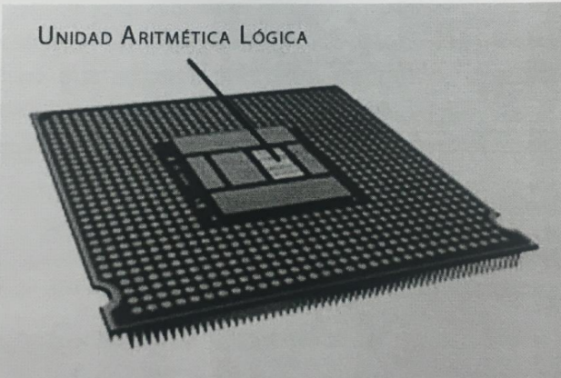
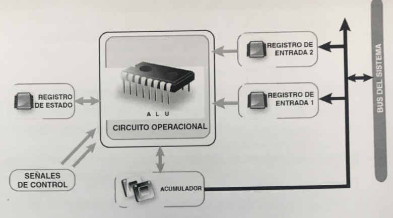
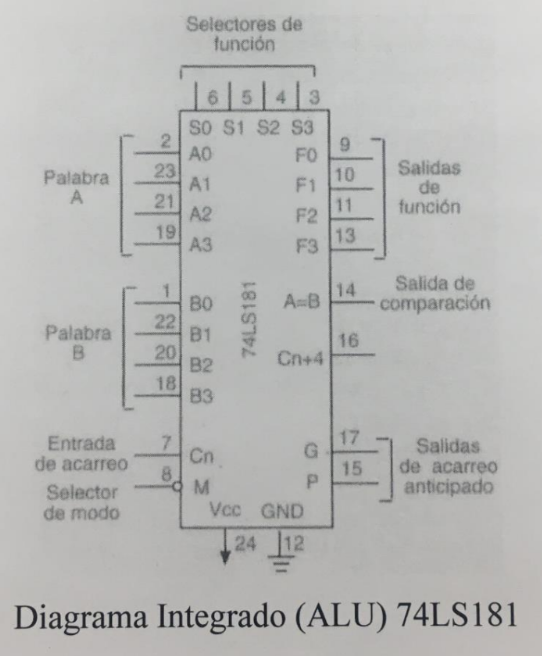

ALU ( Arithmetic Logic Unit ) es un circuito digital que realiza como su nombre lo indica las operaciones aritméticas y lógicas entre los datos de un circuito ; suma , resta , divide y multiplica , así como establece comparaciones lógicas a través de los condicionales lógicos " si " , " no " , y , " o " . Todos los microprocesadores ( CPU's ) incluyen al menos una ALU , que varía su poder y complejidad según su finalidad.

UNIDAD ARITMETICA LOGICA
Además de los operadores lógicos y aritméticos , la ALU cuenta con una serie de registros para almacenar los datos , y bits de información sobre los resultados.

Operaciones de la ALU :
Con respecto a cualquier procesador , las instrucciones involucran operaciones sobre un operando , o entre dos de ellos , estando uno de los mismos almacenado en el registre acumulador que es el registro de trabajo de cualquier ALU .
El tipo de operaciones que puede realizar una ALU , pueden resumirse asi :
1. Suma aritmética .
2. Resta aritmética ( complemento a 2 ) .
3. Operaciones lógicas ( producto y suma lógica Comparació Complementación enmascaramiento ) .
4. Desplazamiento o rotación .
5. Transferencia .
Algunas instrucciones están referidas al contenido del registro acumulador en su totalidad , y otras a algunos bits , correspondiente a una palabra de datos que se desea modificar . El circuito ALU es simplemente un operador , es decir , sólo realiza operaciones . La ALU no toma decisiones . Las entradas deben contener tanto la magnitud como el signo que corresponda a la operación . La ALU requiere de un mecanismo de control que le permita saber el tipo de operación a realizar .
Partes de la ALU :
* Sumador / restador .
* Operadores lógicos ( AND , OR , XOR , NOT ) .
* Un acumulador y un registro auxiliar .
* Un registro de salida . Señales de control que indiquen la operación a realizar Registro de banderas .
La ALU deberá contar con un circuito de control que permita :
* Identificar la operación a realizar .
* Administrar los recursos internos .
* Generar las banderas .
Las computadoras más modernas , que incluyen procesadores de múltiples núcleos , incorporan a su vez múltiples dispositivos ALU , que son más complejos y con una mayor potencia .
